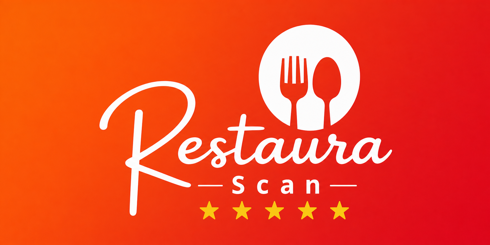
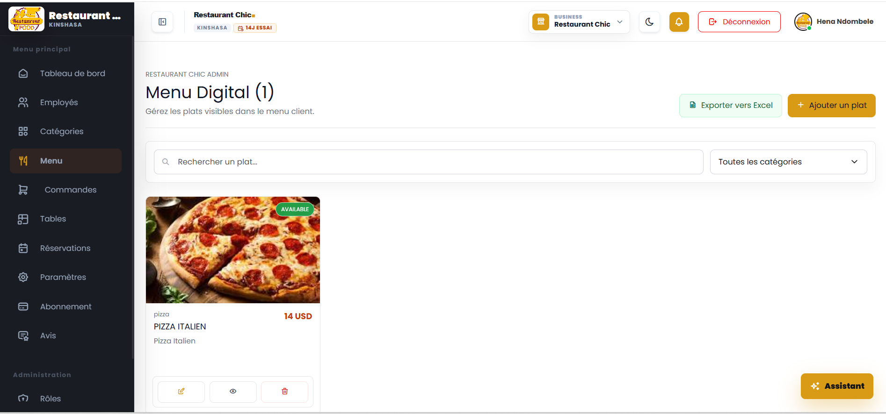
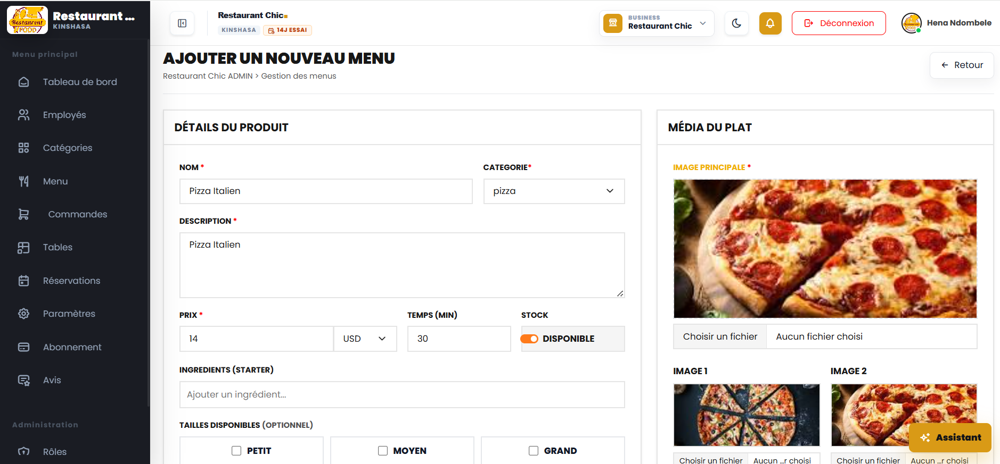
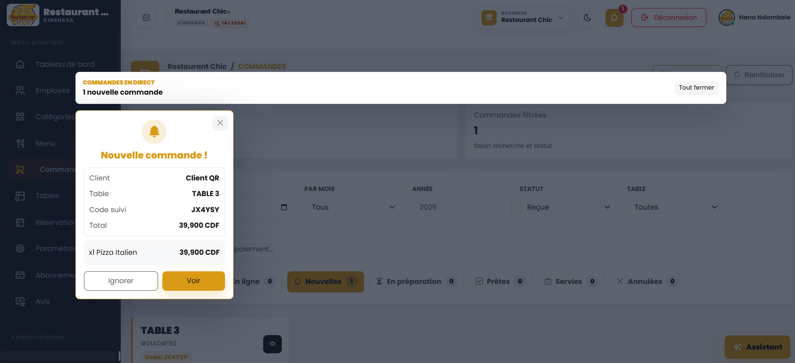
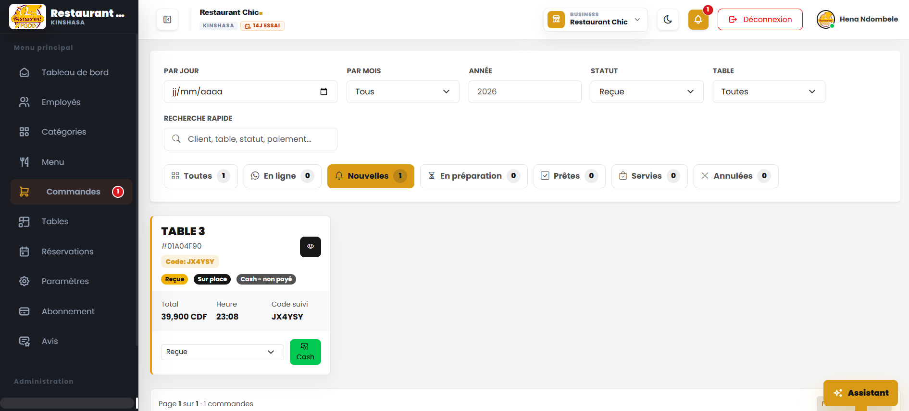
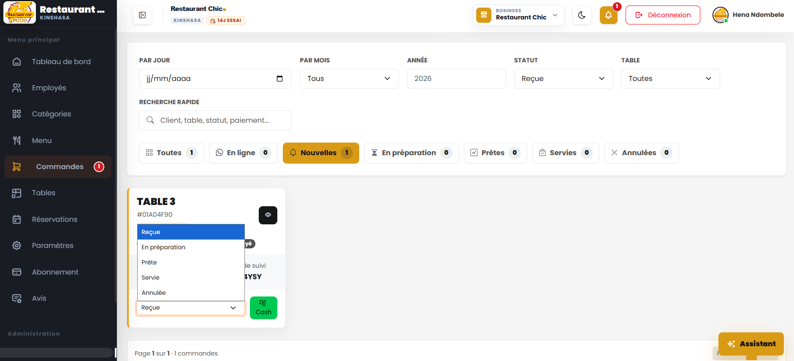
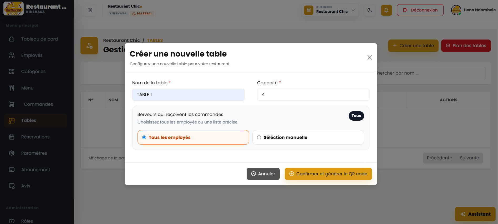
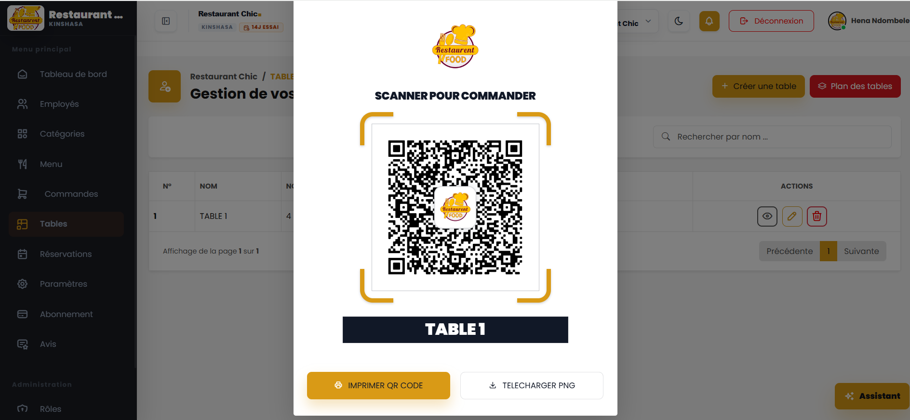
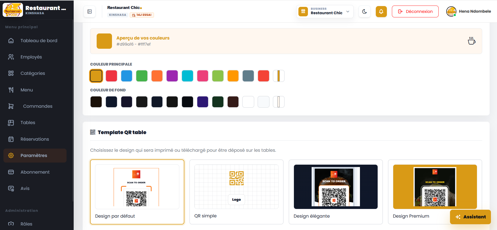

RESTAURANT SCANPRESENTATION 2026
14 JOURS
GRATUITS
LE MAGAZINE DU RESTAURATEUR CONNECTE
Votre restaurant.
Plus fluide. Plus rentable.
Menu QR, commandes en temps réel et pilotage centralisé dans une seule plateforme professionnelle.
MENU DIGITALCOMMANDES LIVEQR PAR TABLETABLEAU DE BORD
PARCOURS CLIENT
Du QR à la commande
Trois gestes.
Une expérience complète.
1Scanner
Le client pointe son téléphone vers le QR code placé sur la table.
2Choisir
Il parcourt un menu visuel, consulte les détails et compose sa commande.
3Commander
La commande arrive en temps réel auprès de l'équipe avec son code de suivi.
03
Menu digital
Une carte qui donne envie.
Photos, prix, catégories, disponibilité et temps de préparation : tout est administrable.

Vue de gestion du menu et disponibilité des plats.

Création d'un plat avec médias, prix, stock et options.
01
Visuel
Des photos attractives pour mieux présenter chaque assiette.
02
Flexible
Prix, devises, variantes, tailles et disponibilité ajustables.
03
Rapide
Recherche et catégories pour retrouver un plat en quelques secondes.
Votre menu travaille pour vous. Une carte claire aide le client à choisir et favorise une commande plus fluide.
04
Commandes en direct
Chaque nouvelle commande
devient une action claire.

Alerte instantanée
Table, montant, code de suivi et contenu apparaissent immédiatement.

Vue opérationnelle
Filtrez par jour, mois, statut ou table et retrouvez chaque commande.

Du reçu au servi - le statut suit le rythme réel de la cuisine.
✓Moins d'erreurs de transmissionLes informations restent centralisées et lisibles.
✓Priorités visiblesChaque étape est identifiable en un coup d'oeil.
✓Encaissement cash intégréLe calculateur facilite le rendu de monnaie et la confirmation.
05
Tables et QR codes
Chaque table devient
un point de vente digital.

Création de table et affectation des employés qui reçoivent les commandes.

QR code prêt à être imprimé ou téléchargé en PNG.

Personnalisation des couleurs et choix du template QR.
IdentifiableUn QR unique relie la commande à la bonne table.
ImprimableTéléchargement ou impression directement depuis l'espace.
A votre imageCouleurs, logo et design cohérents avec votre marque.
06
Pilotage business
Voir l'activité.
Comprendre. Décider.
Le tableau de bord réunit les indicateurs essentiels : commandes du jour, chiffre d'affaires, occupation des tables et plats publiés.
Aujourd'hui
Suivez le service en cours et les encaissements.
Par restaurant
Gardez une lecture précise de chaque établissement.
Vue globale
Passez à une vision Business pour comparer et superviser.
Clair de jour comme de nuit.L'interface propose un affichage lumineux ou sombre selon le contexte de travail.
07